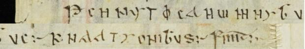

At a glanceExisting decipherment · complete
- The document
- One line of cryptic letters on p. 419 of Cod. Sang. 1395, among the Irish incantations known as the St. Gall Incantations, ending in a plain FINIT.
- Where
- St. Gallen, Stiftsbibliothek, Cod. Sang. 1395, p. 419 (e-codices csg-1395). No target of this name in DECODE or the catalogue.
- The cipher
- Latin in unusual letter forms, some of them Greek-type; the printed transcription uses Greek letters for some glyphs. Whether it is a cipher at all, and of what type, is open: no letter table was recovered here.
- How the reading was obtained
- It was not deciphered here. The reading praedicent omnibus nationibus is printed in Thesaurus Palaeohibernicus II, p. 290, and was taken from Wikisource and a web transcription of that page.
- What it says
- “Let them preach to all nations”, a Gospel commission, followed by “ends”.
- Still open
- The letter-by-letter key: the first word does not line up letter for letter with praedicent, and the leading K and doubled A of the last word are unexplained.
- Credit
- Whitley Stokes and John Strachan (1903) for the reading; the page works from their text only at second hand.
The line on the page
The line sits on p. 419, the verso of the Matthew leaf (p. 418), among the Irish incantations. It is a single line in capital-like letters, some of them unusual or Greek-type forms (a round e, a phi, a pi-like glyph, a lunate sigma). The printed transcription is PreCHNYTΦcANϖMNYBVc:- KNAATYONIBVS:- FINIT. On the image the word breaks and the letter count match it; the image reads the last word KHAATYONIBVS (an H, not an N, after the K), a difference not resolved here.

The published reading
The printed transcription of the first word is PreCHNYTΦcAN; letter for letter that is prechnytosan, which Stokes and Strachan read as praedicent, followed by omnibus nationibus. The line is a Gospel commission (compare Matthew 28:19) and reads praedicent omnibus nationibus. Finit., “let them preach to all nations. Ends.” Nothing in the reading is new here.
What checking showed
Word omnibus matches letter for letter once Y stands for i, V for u, a pi-like form for o and a lunate sigma for s. nationibus fits with Y (and once a plain I) for i and V for u but shows 12 glyphs for 10 letters; a doubled A would account for one extra, and the leading K is unexplained. praedicent also shows 12 glyphs for 10 letters and does not align. With 31 glyphs in the three words (36 with FINIT) and a known plaintext, any letter table fitted to the line cannot be tested against anything else, so none is claimed.
What remains uncertain
- The letter-level key (not recovered).
- The glyph values in the first word; the page used the printed transcription and the image only for word breaks and the ending.
- Whether this line is what is meant by “the St. Gall Cryptograms”: the phrase was given without a source and nothing in the repository, the catalogue or the web search matched it. A search for cryptic strings in St. Gall computus manuscripts found nothing, and a search-engine claim of a cipher on p. 58 of Cod. Sang. 459 was false: that page is an Easter table.
Full texts
The transcription and the decryption of every document on this page, so that the reading can be used and checked. Short files are shown here; all are in the repository.
Cryptic colophon among the St. Gall Incantations
A closing line in cryptic letters among the Irish incantations, read in print as a Gospel commission: let them preach to all nations.
Sources
- W. Stokes and J. Strachan, Thesaurus Palaeohibernicus II (1903), p. 290, via Wikisource.
- The St. Gall Incantations, Celtic Literature Collective (transcription).
- St. Gallen, Stiftsbibliothek, Cod. Sang. 1395, p. 419, e-codices.
Notes and texts: targets/stgall1395/
Cite this page
Daniel Bourdeau, “The cryptic colophon of the St. Gall Incantations (Cod. Sang. 1395)”, Cyphersolver, posted 9 November 2026, https://cyphersolver.com/stgall1395.html.